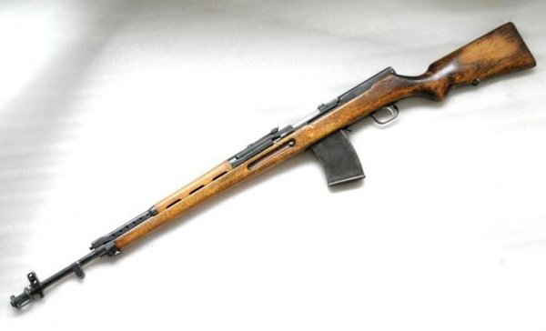

7,62-мм автоматическая винтовка системы Симонова образца 1936 года, АВС-36 (Индекс ГАУ — 56-А-225) —
советская автоматическая винтовка, разработанная оружейником Сергеем Симоновым. Изначально разрабатывалась
как самозарядная винтовка, но в ходе усовершенствований был добавлен режим стрельбы очередями для использования
в экстренной ситуации. Первая автоматическая винтовка, разработанная в СССР и принятая на вооружение.
Также стала второй в мире (если не учитывать автомат Фёдорова) самозарядной винтовкой, принятой
на вооружение, после винтовки Мондрагона, и опередив на несколько месяцев американскую M1 Garand.
- Масса, кг 3,8
- Длина, мм 1230
- Длина ствола, мм 612
- Патрон 7,62×54 мм R
- Калибр, мм 7,62
- Принципы работы отвод пороховых газов, клиновое запирание
- Скорострельность, выстрелов/мин 800
- Начальная скорость пули, м/с 840
- Вид боепитания коробчатый, отъемный магазин на 15 патронов